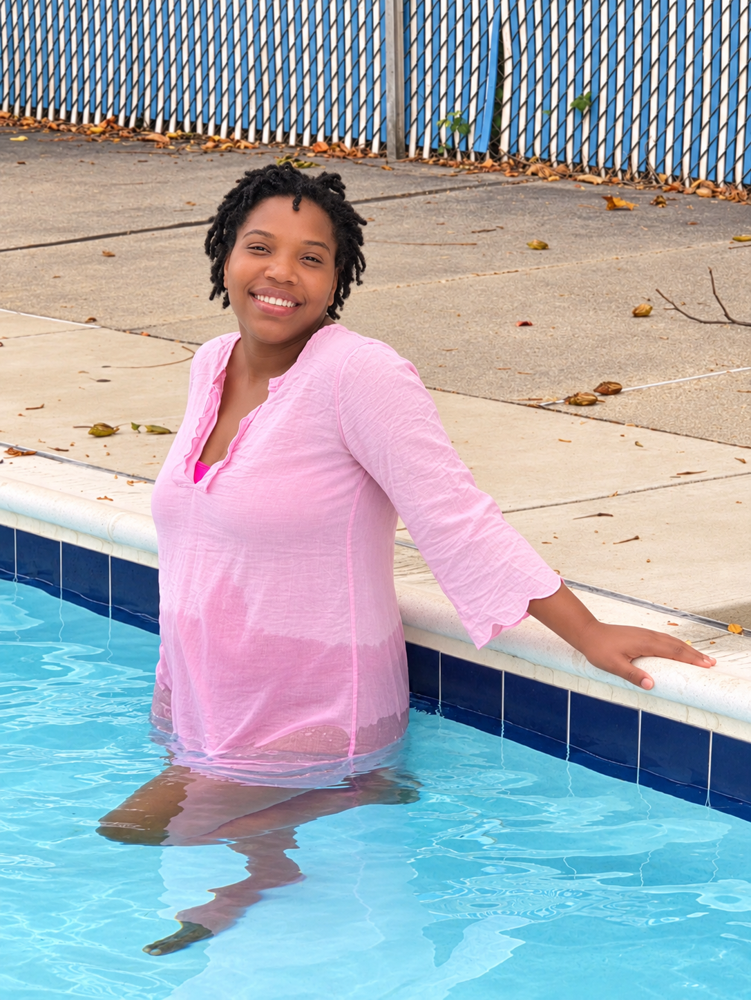

The Year That Has Been

It is noteworthy to reflect upon the year that has been.
Now, since this is the usual practice for most birthday events, it is not an unjust question to wonder: what has been so special about this year?
The answer is that it has been, by far, one of the most pressing and demanding seasons of this story. The year that has been has demanded a lot of us, more than we have ever had to give before. Yet she stood tall to the task, approached the moment, and bore the demands.
That is noteworthy.
In the absence of her partner, who was off in pursuit of bigger dreams and a future season for the family, she bore the moment.
It was just before the departure that we learned of an impending arrival. Though she would turn out to be our greatest blessing yet, what a ball of energy and light is baby, at the time, it was frightening. This journey, this story of new birth, was one we had always discussed taking together, bearing each other up through the changes, uncertainties, difficult mornings, and weary days. That was the plan.
But, this little princess decided that her journey of arrival would look different and would not be dictated by any pre-baked plans. She is spontaneous, you see, and perhaps poetic even. One wonders where her daddy got it from. LOL.
The point is, it was a difficult journey, one taken apart, thousands of miles apart. But she bore it. She stood through it. She watered, nourished, and poured into our arrival.
And our blessing came just in time.
Interestingly enough, right at separations end, 16 sunrises, to be exact, she came.
And so, in the interest of abbreviating this story, the fact of the matter is that this has been a year of challenge, a year of tears, a year of loss, a year of grief. But in an oxymoronic, almost spiritually poetic way, it has also been the year of most blessings, the year in which we have gained more than we have had to grieve.
Talk about restoration. A Job restoration story.
And so it is worth praising her. It is worth reflecting, giving thanks, rendering glory, and giving praise. For though surviving the year that has been is nothing short of a miracle, God's chosen bearer of that miracle has been her.
So we celebrate her. We exist in joy for her. We delight. We give thanks.
I give thanks.
I exist in and salivate this love, this love, and how she has championed this year. Some would say, (she is the real soldier).
And so, in all of it, what do we say?
Happy birthday, Mama Mel.
Happy birthday, my wife, Lizzie and Williams' mom.
Happy born day.
May our showering of love and obedient waiting upon you today begin to repay what can never be repaid: how you stood for us and showed up for us in this year that has been.
May the God of love, the Author of our story, grant many more years with you, many more years, and even countless ones in glory's hall.
We love you, Mama Mel.